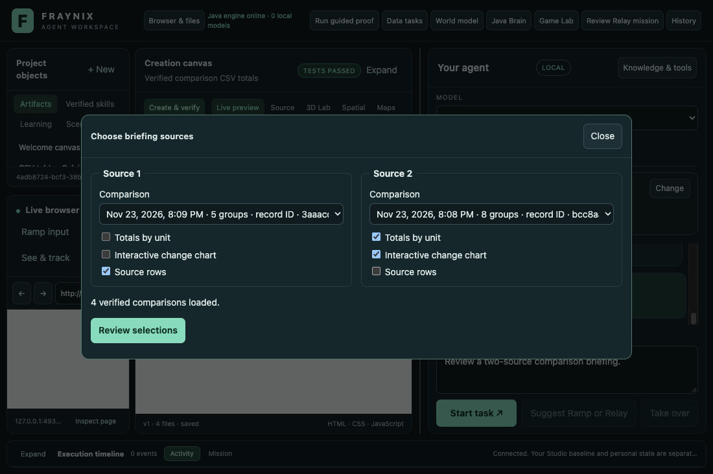
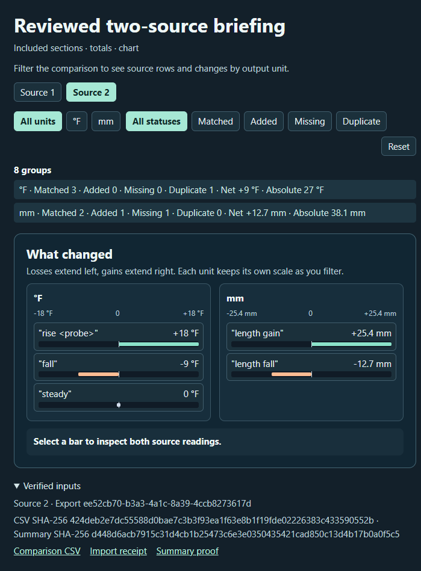

Choose older comparisons and sections for each source
Choose two saved verified comparisons and set the sections for each. One approval preserves the selected order and the original evidence through restart and offline export.

Apple silicon macOS shows different section choices for two older comparisons

The Windows offline file shows totals and chart on Source 2
System files
Open source